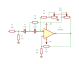
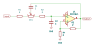

The circuit — 04
The high- and low-pass filters
Two second-order Sallen-Key filters, each on one OPA1641, each on a sheet of its own. The high-pass works as drawn. The low-pass is missing a capacitor.
High-pass filter

R1 (5.6k) and R2 (10k) divide the input down by 3.9 dB. C1 and C2 (270 pF each) then pass the signal to the op amp’s + input; R4 plus one gang of RV1 goes from the + input to ground, and R3 plus the other gang feeds the output back to the point between the capacitors. R6 (16k) and R5 (27k) give the op amp a gain of 1.59, +4.0 dB, which cancels the input divider and sets the filter’s Q at about 0.7.
RV1 is a 100k dual-gang pot, one gang in each resistor, so both resistors rise and fall together and the knob sweeps the cutoff cleanly:
| RV1 | Resistance per side | Cutoff (−3 dB) |
|---|---|---|
| Fully one way | 30k | 20 kHz |
| Quarter | 55k | 11 kHz |
| Centre | 80k | 7.6 kHz |
| Three quarters | 105k | 5.8 kHz |
| Fully the other way | 130k | 4.6 kHz |
Is 4.6–20 kHz the range you want?
On a desk channel the high-pass usually trims rumble and handling noise, somewhere from 20 to 300 Hz. At 270 pF this one removes everything below the top of the audio band. If a rumble filter is the aim, scale both capacitors up together: 27 nF puts the same knob at 45–200 Hz with nothing else changed.
Low-pass filter

The signal goes through R1 (6.2k), along RV1’s 100k track and through R2 (6.2k) to the op amp’s + input. RV1’s wiper carries C1 (20 nF) back from the output. R4 and R3 set the same gain of 1.59.
The capacitor to ground is missing
A Sallen-Key low-pass needs two capacitors: one from the middle of the resistor chain back to the output (C1 here) and one from the op amp’s + input to ground. The sheet has only the first. Without the second, no current flows in R2, the + input simply follows the wiper, and C1 is pure positive feedback through a stage with a gain above 1. That makes the circuit unstable: it will latch to a rail rather than filter.
The team’s LTspice model lpf.asc has the missing part: 10 nF to ground.
Adding it to the sheet makes this a working filter.
The knob, once the capacitor is back
RV1 is a single pot with its wiper as the tap between the two halves. Turning it does not change the total resistance; it moves resistance from one side of C1 to the other. The cutoff depends on the product of the two sides, and a product with a fixed sum is largest when the two are equal. So the cutoff is lowest at the centre and rises towards either end:
| RV1 position | 0% | 25% | 50% | 75% | 100% |
|---|---|---|---|---|---|
| Corner frequency, with 10 nF to ground | 440 Hz | 220 Hz | 200 Hz | 220 Hz | 440 Hz |
Both halves of the knob do the same thing, so no panel legend can be drawn for it, and the Q moves as well. The high-pass already shows the fix: a dual-gang pot with one gang in place of each resistor, so both sides rise and fall together.
As with the high-pass, the range is worth a second look. A desk low-pass usually trims hiss somewhere above a few kilohertz; 200–440 Hz removes most of a voice. Dividing both capacitors by 20 (1 nF and 470 pF) moves it to about 4–9 kHz.